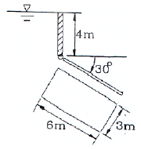
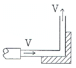
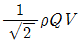
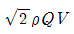
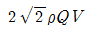
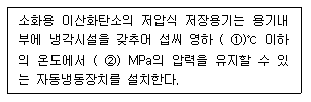
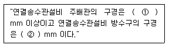

소방설비산업기사(기계) (2011-06-12 기출문제)
1과목: 소방원론
1. 소화약제로 사용되는 물에 대한 설명 중 틀린 것은?
- 극성 분지이다.
- 수소결합을 하고 있다.
- 아세톤, 벤젠보다 증발 잠열이 크다.
- 아세톤, 구리보다 비열이 매우 작다.
(정답률: 77%)

2. 플래쉬오버(FLASH OVER)란 무엇인가?
- 건물 화재에서 가연물이 착화하여 연소하기 시작하는 단계
- 건물 화재에서 발생한 가연성 가스가 축적되다가 일순간에 화염이 크게 되는 현상
- 건물 화재에서 소방활동 진압이 끝난 단계
- 건물 화재에서 다 타고 더 이상 탈 것이 없어 자연·진화된 상태
(정답률: 87%)
3. 액체 이산화탄소 1kg 이 1atm, 20℃의 대기 중에 방출되어 모두 기체로 변화하면 약 몇 L 가 되는가?
- 437
- 546
- 658
- 772
(정답률: 48%)
4. 목재의 연소형태로 옳은 것은?
- 증발연소
- 분해연소
- 표면연소
- 자기연소
(정답률: 75%)
5. 중질유가 탱크에서 조용히 연소하다 열유층에 의해 가열된 하부의 물이 폭발적으로 끓어 올라와 상부의 뜨거운 기름과 함께 분출하는 현상을 무엇이라 하는가?
- 플래쉬오버
- 보일오버
- 백드래프트
- 룰오버
(정답률: 87%)
6. 불연성 가스에 해당하는 것은?
- 프레온가스
- 암모니아가스
- 일산화탄소가스
- 메탄가스
(정답률: 59%)
7. 고체연료의 연소형태를 구분할 때 해당하지 않는 것은?
- 증발연소
- 분해연소
- 표면연소
- 예혼합연소
(정답률: 86%)
8. Halon 1211 소화약제의 분자식은?
- CBr2F2
- CH2CLBr
- C2FBr
- CF2CLBr
(정답률: 75%)
9. 다음 중 독성이 가장 강한 가스는?
- C3H8
- O2
- CO2
- COCL2
(정답률: 73%)
10. 위험물질의 자연발화를 방지하는 방법이 아닌 것은?
- 열의 축적을 방지할 것
- 저장실의 온도를 저온으로 유지할 것
- 촉매 역할을 하는 물질과 접촉을 피할 것
- 습도를 높일 것
(정답률: 82%)
11. 화재를 소화시키는 소화작용이 아닌 것은?
- 냉각작용
- 질식작용
- 부촉매작용
- 활성화작용
(정답률: 80%)
12. 피난대책의 조건으로 틀린 것은?
- 피난로는 간단명료할 것
- 피난설비는 반드시 이동식 설비일 것
- 막다른 복도가 없도록 계획할 것
- 피난설비는 Fool-Proof와 Fail-Safe 의 원칙을 중시 할 것
(정답률: 83%)
13. 제4류 위험물 중 제1석유류, 제2석유류, 제3석유류, 제4석유류를 구분하는 기준은?
- 착화점
- 증기비중
- 비등점
- 인화점
(정답률: 84%)
14. 내화구조 기준에서 외벽 중 비내력벽의 경우에는 철근콘크리트조의 두께가 몇cm이상인 것인가?
- 5
- 6
- 7
- 8
(정답률: 43%)
15. 소화(消火)를 하기 위한 방법으로 틀린 것은?
- 산소의 농도를 낮추어 준다.
- 가연성 물질을 냉각시킨다.
- 가열원을 계속 공급한다.
- 연쇄반응을 억제한다.
(정답률: 83%)
16. 햇빛에 방치한 기름걸레가 자연발화를 일으켰다. 다음 중 이 때의 원인에 가장 가까운 것은?
- 광합성 작용
- 산화열 축적
- 흡열반응
- 단열압축
(정답률: 78%)
17. 등유 또는 경유 화재에 해당하는 것은?
- A급 화재
- B급 화재
- C급 화재
- D급 화재
(정답률: 89%)
18. 메탄 1mol이 완전 연소하는데 필요한 산소는 몇 mol인가?
- 1
- 2
- 3
- 4
(정답률: 67%)
19. 제2종 분말소화약제의 주성분은?
- 제1인산암모늄
- 황산나트륨
- 탄산수소나트륨
- 탄산수소칼륨
(정답률: 73%)
20. 산소와 질소의 혼합물인 공기의 평균 분자량은? (단, 공기는 산소 21vol%, 질소 79vol%로 구성되어 있다고 가정한다.)
- 30.84
- 29.84
- 28.84
- 27.84
(정답률: 64%)
2과목: 소방유체역학
21. 수조에서 지름 80mm인 배관으로 20˚C 물이 0.95m3/min의 유량으로 유입될 때, 5m의 부차손실이 발생하였다. 이때의 부차적 손실계수는? (단, 중력가속도 g = 9.8m/s 이다.)
- 9.0
- 9.4
- 9.9
- 10.2
(정답률: 50%)
22. 다음 중 펌프의 이상현상인 공동현상(cavitation)의 발생원인과 거리가 먼 것은?
- 펌프의 흡입측 손실이 클 경우
- 펌프의 마찰손실이 클 경우
- 펌프의 토출측 배관에 수조나 공기저장기가 있는 경우
- 펌프의 흡입측 배관경이 너무 작을 경우
(정답률: 73%)
23. 관 속에 물이 흐르고 있다. 피토-정압관을 수은이든 U자관에 연결하여 전압과 정압을 측정하였더니 20mm의 액면차가 생겼다. 피토-정압관의 위치에서의 유속은 약 몇 m/s 인가? (단, 속도계수는 0.95이다.)
- 2.11
- 3.65
- 11.11
- 12.35
(정답률: 43%)
24. 측정되는 압력에 의하여 생기는 금속의 탄성변형을 기계적으로 확대 지시하여 유체의 압력을 재는 계기는?
- 마노미터
- 시차액주계
- 부르돈관 압력계
- 기압계
(정답률: 68%)
25. 펌프의 양정 가운데 실양정(actual head)을 가장 적합하게 설명한 것은?
- 펌프의 중심선으로부터 흡입 액면까지의 수직 높이
- 흡입 액면에서 송출 액면까지의 수직 높이
- 펌프의 중심선으로부터 송출 액면까지의 수직 높이
- 흡입 액면에서 송출 액면까지의 마찰 손실수두
(정답률: 53%)
26. 50kg의 액화 할론(1301)이 21˚C에서 대기 중으로 방출을 할 경우에 부피는 몇 m3가 되는가?
- 7.51
- 8.12
- 0.16
- 8.98
(정답률: 43%)
27. 다음 중 베르누이 방적식이 유도되기 위한 조건이 아닌 것은?
- 유동은 압축성 유동이다.
- 유체 입자는 유선에 따라 움직인다.
- 유체는 마찰이 없다.(점성력이 0이다.)
- 유동은 정상유동이다.
(정답률: 55%)
28. 이상유체의 정의를 옳게 설명한 것은?
- 압축을 가하면 체적이 수축하고 압력을 제거하면 처음 체적으로 되돌아가는 유체
- 유체유동시 마찰 전단응력이 발생하지 않으며 압력 변화에 따른 체적변화가 없는 유체
- 뉴턴의 점성법칙을 만족하는 유체
- 오염되지 않은 순수한 유체
(정답률: 74%)
29. 그림과 같이 수평면으로부터 30˚ 기울어진 3 m x6 m의 직사각형 수문이 수면으로부터 4 m 아래에 위치 하고 있다. 수문에 작용하는 힘은 약 몇 kN인가? (단, 유체는 물이다.)(오류 신고가 접수된 문제입니다. 반드시 정답과 해설을 확인하시기 바랍니다.)

- 970
- 1230
- 1530
- 1770
(정답률: 40%)
30. 지름 0.2cm인 모세관에서 표면장력에 의한 물의 상승높이는 몇m 인가? (단, 표면장력계수는 7.1× 10-2N/m이고 접촉각은 30°이다.)
- 0.013
- 0.0012
- 0.0027
- 0.031
(정답률: 50%)
31. 소화펌프의 토출량이 48m3/hr, 양정 50m, 펌프효율 67%일 때 필요한 축동력은 약 몇 kW인가?
- 6.24
- 9.75
- 10.7
- 12.1
(정답률: 52%)
32. 유체의 흐름에서 유선이란 무엇인가?
- 한 유체 입자가 일정한 기간에 움직인 경로
- 유체 유동시 유동 단면의 중심을 연결한 선이다.
- 공간 내의 한점을 지나는 모든 유체입자들의 순간궤적을 말한다.
- 유동장 내에서 속도벡터의 방향과 일치하도록 그려진 연속적인 선을 말한다.
(정답률: 56%)
33. 어느 이상기체 10kg의 온도를 200℃ 만큼 상승시키는데 필요한 열량은 압력이 일정한 경우와 체적이 일정한 경우에 375 kJ의 차이가 있다. 이 이상기체의 기체상수는 약 몇 J/kg ·k인가?
- 185.5
- 187.5
- 191.5
- 194.5
(정답률: 55%)
34. 내경 20 cm인 배관 속을 매분 1.8m3의 정상 흐름을 보여주는 유체의 레이놀즈수가 1.5 x 106 이었다면 이 유체의 점성계수는 몇 Pa ·s 인가? (단, 유체 밀도는 780 kg/m3이다.)
- 4.97 x 10-5
- 9.93 x 10-5
- 1.277 x 10-4
- 9.73 x 10-4
(정답률: 44%)
35. 수압기의 피스톤의 직경이 각각 60cm와 15cm이다. 작은 피스톤에 14.7 N의 힘을 가하면 큰 피스톤에는 몇 N의 하중을 올릴 수 있겠는가?
- 98.5
- 168.2
- 235.2
- 298.3
(정답률: 48%)
36. 안지름이 300mm, 길이가 301m인 주철관을 통하여 물이 유속 3m/s로 흐를 때 손실수두는 몇 m인가? (단, 관마찰계수는 0.⑤이다.)
- 20.1
- 23.0
- 25.8
- 28.9
(정답률: 54%)
37. 기체의 온도가 상승할 때 점성계수를 가장 올바르게 표현한 것은?
- 분자운동량의 증가로 증가한다.
- 분자운동량의 감소로 감소한다.
- 분자응집력의 증가로 증가한다.
- 분자응집력의 감소로 감소한다.
(정답률: 52%)
38. 그림과 같이 직각으로 구부러진 고정 날개에 밀도 ρ 안 물분류가 충돌하여 수직 방향으로 분출되고 있다. 분류의 속도는 V, 유량은 Q일 때 고정 날개가 받는 충격력의 크기는?



- 2pQV

(정답률: 59%)
39. 압력 P1= 100 kPa, 온도 T1= 400 K, 체적 V1=1.0m3인 밀폐계(closed system)의 이상기체가 PV1.4=constant인 폴리트로픽 과정(polytropic process)을 거쳐 압력 P2 = 500 kPa까지 압축된다. 이 과정에서 기체가 한 일은 약 몇 kJ 인가?
- -100
- -120
- -150
- -180
(정답률: 33%)
40. 멀리 떨어진 화염으로부터 직접 열기를 느끼게 되는 열전달 원리는?
- 복사
- 대류
- 전도
- 비등
(정답률: 70%)
3과목: 소방관계법규
41. 점포에서 위험물을 용기에 담아 판매하기 위하여 지정수량의 40배 이하의 위험물을 취급하는 장소는?
- 일반취급소
- 주유취급소
- 판매취급소
- 이송취급소
(정답률: 73%)
42. 제조소 중 위험물을 취급하는 건축물의 구조는 특별한 경우를 제외하고 어떻게 하여야 하는가?
- 지하층이 없는 구조이어야 한다.
- 지하층이 있는 구조이어야 한다.
- 지하층이 있는 1층 이내의 건축물이어야 한다.
- 지하층이 있는 2층 이내의 건축물이어야 한다.
(정답률: 67%)
43. 의용소방대의 설치 등에 대한 사항으로 옳지 않는 것은?
- 의용소방대원은 비상근으로 한다.
- 소방업무를 보조하기 위하여 특별시ㆍ광역시ㆍ시ㆍ읍ㆍ면에 의용소방대를 둔다.
- 의용소방대의 운영과 처우 등에 대한 경비는 그 대원의 임면권자가 부담한다.
- 의용소방대의 설치ㆍ명칭ㆍ구역ㆍ조직ㆍ훈련 등 운영 등에 관하여 필요한 사항은 소방방재청장이 정한다.
(정답률: 51%)
44. 일반적으로 일반 소방시설설계업의 기계분야의 영업범위는 연면적 몇 m2미만의 특정소방대상물에 대한 소방시설의 설계인가?
- 10000
- 20000
- 30000
- 50000
(정답률: 68%)
45. 산화성 고체이며 제1류 위험물에 해당하는 것은?
- 황화린
- 칼륨
- 유기관산화물
- 염소산염류
(정답률: 66%)
46. 다음 중 소방기본법시행령에서 규정하는 국고보조 대상이 아닌 것은?
- 소화설비
- 소방자동차
- 소방전용 전산설비
- 소방전용 통신설비
(정답률: 66%)
47. 다음 중 소방시설공사업을 하려는 자가 공사업 등록 신청시에 제출하여야 하는 서류로 볼 수 없는 것은?
- 소방 기술인력 연명부
- 소방산업공제조합에 출자ㆍ예치ㆍ담보한 금액 확인서
- 전문경영진단기관이 신청일 전 최근 90일 이내 작성한 기업진단 보고서
- 법인 등기부 등본
(정답률: 52%)
48. 소방신호의 방법에 해당하지 않는 것은?
- 타종
- 싸이렌
- 게시판
- 수신호
(정답률: 48%)
49. 관계인이 예방규정을 정하여야 하는 제조소 등의 기준으로 올바른 것은?
- 지정수량의 20배 이상의 위험물을 취급하는 제조소
- 지정수량의 150배 이상의 위험물을 저장하는 옥내 저장소
- 지정수량의 200배 이상의 위험물을 저장하는 옥외 저장소
- 지정수량의 250배 이상의 위험물을 저장하는 옥외 탱크 저장소
(정답률: 54%)
50. 소방활동에 종사하여 시·도지사로부터 소방활동의 비용을 지급받을 수 있는 자는?
- 소방대상물에 화재, 재난·재해 그 밖의 위급한 상황 이 발생한 경우 그 관계인
- 소방대상물에 화재, 재난·재해 그 밖의 위급한 상황 이 발생한 경우 구급 활동을 한 자
- 화재 또는 구조·구급현장에서 물건을 가져간 자
- 고의 또는 과실로 인하여 화재 또는 구조·구급활동이 필요한 상황을 발생시킨 자
(정답률: 71%)
51. 특별한 경우를 제외하고 소방검사를 하기 위해 관계인에게 알려야 하는 시간으로 옳은 것은?
- 12시간 전
- 24시간 전
- 36시간 전
- 48시간 전
(정답률: 67%)
52. 특정소방대상물의 방염대상이 아닌 것은?
- 아파트를 제외한 11층 이상인 건물
- 안마시술소, 헬스클럽장, 숙박시설, 종합병원
- 다중이용업의 영업장
- 실내수용장
(정답률: 68%)
53. 다음 중 소방시설관리업을 등록할 수 있는 자는?
- 금치산자·한정치산자
- 금고 이상의 형의 집행유예선고를 받고 그 유예기간 중에 있는 자
- 금고이상의 형을 선고받고 그 집행이 종료되거나 집행이 면제된 날로부터 2년이 경과되지 아니한 자
- 소방시설관리업의 등록이 취소된 날로부터 2년이 경과된 자
(정답률: 72%)
54. 소방시설의 종류 중 경보설비가 아닌 것은?
- 비상방송설비
- 누전경보기
- 연결살수설비
- 자동화재속보설비
(정답률: 71%)
55. 다음 중 대통령령으로 정하는 소방용 기계 기구에 속하지 않는 것은?
- 방염제
- 소화약제에 따른 간이소화용구
- 가스누설경보기
- 휴대용비상조명등
(정답률: 55%)
56. 무창층 이라 함은 지상층 중 피난 또는 소화활동상유효한 개구부의 면적이 그 층의 바닥 면적의 얼마 이하가 되는 층을 말하는가?
- 40분의 1 이하
- 30분의 1 이하
- 20분의 1 이하
- 10분의 1 이하
(정답률: 68%)
57. 다음 중 무선통신 보조설비를 반드시 설치하여야 하는 특정소방대상물로 볼 수 없는 것은?
- 지하층의 바닥면적의 합계가 2500m2인 경우
- 지하층의 층수가 3개층으로 지하층의 바닥면적의 합계가 1000m2인 경우
- 지하(터널제외)의 연면적이 1500m2인 경우
- 지하가 터널로서 길이가 500m인 경우
(정답률: 20%)
58. 공공기관 방화관리업무의 강습과목으로 해당되지 않는 것은?
- 소방관계법령
- 응급처치요령
- 위험물실무
- 소방학개론
(정답률: 48%)
59. 위험물 안전관리법령에서 정하는 자체소방대에 관한 원칙적인 사항으로 옳지 않은 것은?
- 제4류 위험물을 취급하는 제조소 또는 일반취급소에 대하여 적용한다.
- 저장ㆍ취급하는 양이 지정수량의 3만 배 이상의 위험물에 한한다.
- 대상이 되는 관계인은 대통령령의 규정에 의하여 화학 소방자동차 및 자체소방대원을 두어야 한다.
- 자체소방대를 두지 아니한 허가 받은 관계인에 대한 벌칙은 1년 이하의 징역 또는 1천만원 이하의 벌금이다.
(정답률: 53%)
60. 다음은 소방기본법상 소방업무를 수행하여야 할 주체이다. 설명이 옳은 것은?
- 소방방재청장, 시ㆍ도지사는 화재, 재난ㆍ재해 그밖에 구조ㆍ구급이 필요한 상황이 발생한 때에 신속한 소방활동을 위한 정보를 수집ㆍ전파하기 위하여 종합상황실을 설치ㆍ운영하여야 한다.
- 소방의 역사와 안전문화를 발전시키고 국민의 안전의식을 높이기 위하여 소방방재청장은 소방박물관을, 소방본부장 또는 소방서장은 소방체험관을 설립하여 운영할 수 있다.
- 시ㆍ도지사는 그 관할구역 안에서 발생하는 화재,재난ㆍ재해 그 밖의 위급한 상황에 있어서 필요한 소방업무를 성실히 수행하여야 한다.
- 소방본부장 또는 소방서장은 소방활동에 필요한 소화전ㆍ급수탑ㆍ저수조를 설치하고 유지ㆍ관리하여야 한다.
(정답률: 50%)
4과목: 소방기계시설의 구조 및 원리
61. 제연설비의 배출기 및 배출 풍도에 관한 설명 중 틀린 것은?
- 배출기와 배출풍도의 접속부분에 사용하는 캔버스는 내열성이 있는 것으로 할 것
- 배출기의 전동기 부분과 배풍기 부분은 분리하여 설치할 것
- 배풍기 부분은 유효한 내열처리를 할 것
- 배출기의 흡입측 풍도안의 풍속은 초속 15m 이상으로 할 것
(정답률: 56%)
62. 폐쇄형 스프링클러 헤드(표준형)를 사용하는 설비의 경우 가압송수장치의 1분당 송수량은 기준개수에 몇 ℓ를 곱한 양 이상으로 정하는가?
- 50 ℓ
- 60 ℓ
- 70 ℓ
- 80 ℓ
(정답률: 60%)
63. 수동식 소화기 중 대형소화기에 충전하는 소화약제의 기준은 할로겐화합물소화기의 경우 몇 kg 이상인가?
- 50
- 40
- 30
- 20
(정답률: 48%)
64. 연결살수설비 전용헤드를 사용하는 배관의 설치에서 하나의 배관에 부착하는 살수헤드가 4개일 때 배관의 구경은 몇 mm 이상으로 하는가?
- 40 mm
- 50 mm
- 65 mm
- 80 mm
(정답률: 68%)
65. 옥내소화전설비의 배관에 관한 규정으로 옳지 않은 것은?
- 옥내소화전 방수구와 연결되는 가지배관의 구경은 40mm 이상으로 한다.
- 주배관 중 수직배관의 구경은 50mm 이상으로 한다.
- 연결송수관설비의 배관과 겸용할 경우의 방수구로 연결되는 배관의 구경은 65mm 이상으로 한다.
- 연결송수관설비의 배관과 겸용할 경우의 급수 주배관의 구경은 80 mm 이상으로 한다.
(정답률: 57%)
66. 바닥면적이 45m2 인 차고에 물분무소화설비를 설치하고자 한다. 가압송수장치(펌프)의 1분당 토출량은 최소 몇 ℓ 이상이 되어야 하는가?
- 900
- 950
- 1000
- 1200
(정답률: 45%)
67. 자동소화설비가 설치되지 아니한 음식점의 바닥면적이 170m2인 주방에 수동식 소화기를 설치하고, 그 외추가적으로 자동확산소화용구를 설치하려고 할 때 몇 개를 설치해야 하는가?
- 1개
- 2개
- 3개
- 4개
(정답률: 53%)
68. 체적 300m3이고, 자동폐쇄장치가 없는 개구부의 면적 2.5m2인 특수 가연물의 저장소에 제 2종 분말 소화설비를 설치하고자 할 경우 필요한 소화약제의 양은 약몇 kg인가? (단, 전역방출방식이다.)
- 108
- 115
- 191
- 241
(정답률: 54%)
69. 제연설비 설치장소에 제연구역을 구획할 때 설치기준에 대한 내용으로 틀린 것은?
- 하나의 제연구역의 면적은 1000m2 이내로 할 것
- 거실과 통로는 상호 제연구획 할 것
- 통로상의 제연구역은 보행중심선의 길이가 60m 를 초과하지 아니할 것
- 하나의 제연구역은 직경 50m 원내에 들어갈 수 있을 것
(정답률: 74%)
70. 소화용수 설비의 소요수량이 40m3 이상 100m3 미만일 경우에 채수구는 몇 개를 설치하여야 하는가?
- 4개
- 3개
- 2개
- 1개
(정답률: 58%)
71. 다음 설명에서 ( )안에 적합한 수치는 어느 것인가?

- ➀18, ➁,2.1
- ➀25, ➁,1.8
- ➀28, ➁,1.5
- ➀30, ➁,1.2
(정답률: 75%)
72. 펌프의 토출량은 호스릴옥내소화전이 가장 많이 설치 된 층의 설치개수(설치개수가 5개 이상은 5개)에 몇 m3를 곱한 양 이상이어야 하는가?
- 2.6m3
- 3.6m3
- 4.6m3
- 5.6m3
(정답률: 68%)
73. 일반적으로 지하층에 설치될 수 있는 피난기구는?
- 피난교
- 완강기
- 구조대
- 피난용트랩
(정답률: 81%)
74. 바닥 면적이 500m2인 의료시설에 필요한 소화기구의 소화능력 단위는 몇 단위 이상인가? (단, 소화능력단위 기준은 바닥면적만 고려한다.)
- 2.5 단위
- 5 단위
- 10 단위
- 16.7 단위
(정답률: 69%)
75. 전역방출방식인 할로겐화합물소화설비에서 할론 1301 소화약제를 분사하는 분사헤드의 방사압력은 얼마이상으로 하는가?
- 0.1MPa
- 0.2MPa
- 0.9MPa
- 1.0MPa
(정답률: 68%)
76. 펌프의 토출관에 압입기를 설치하여 포소화약제 압입용 펌프로 포소화약제를 압입시켜 혼합하는 방식의 푸로포셔너는?
- 펌프 푸로포셔너
- 프레져 푸로포셔너
- 라인 푸로포셔너
- 프레져사이드 푸로포셔너
(정답률: 50%)
77. 스프링클러설비에서 헤드의 설치 시 연소할 우려가 있는 개구부의 상하좌우에 몇 m 간격으로 설치해야 하는가?
- 1.5m
- 2.0m
- 2.5m
- 3.0m
(정답률: 54%)
78. 스프링클러 설비의 가압 송수장치 정격토출 압력은 하나의 헤드 선단에서 얼마의 압력이 되어야 하는가?
- 0.7MPa 이상 1.2MPa 이하
- 0.1MPa 이상 0.7MPa 이하
- 0.1MPa 이상 1.2MPa 이하
- 0.17MPa 이상 1.2MPa 이하
(정답률: 50%)
79. 옥외 소화전이 하나의 소방대상물을 포용하기 위하여 4개소에 설치되어 있다. 규정에 적합한 수원의 유효수량은 몇 m3 이상이어야 하는가?
- 5
- 8
- 10
- 14
(정답률: 39%)
80. 다음 ( )안에 알맞은 수치는?

- ① 65, ② 65
- ① 100, ② 65
- ① 80, ② 100
- ① 100, ② 40
(정답률: 73%)
아세톤은 구리보다 비열이 작은 것이 아니라, 구리보다 비열이 크다. 비열은 단위 질량당 열용량을 의미하는데, 아세톤은 구리보다 분자량이 작아서 단위 질량당 열용량이 더 크기 때문이다.